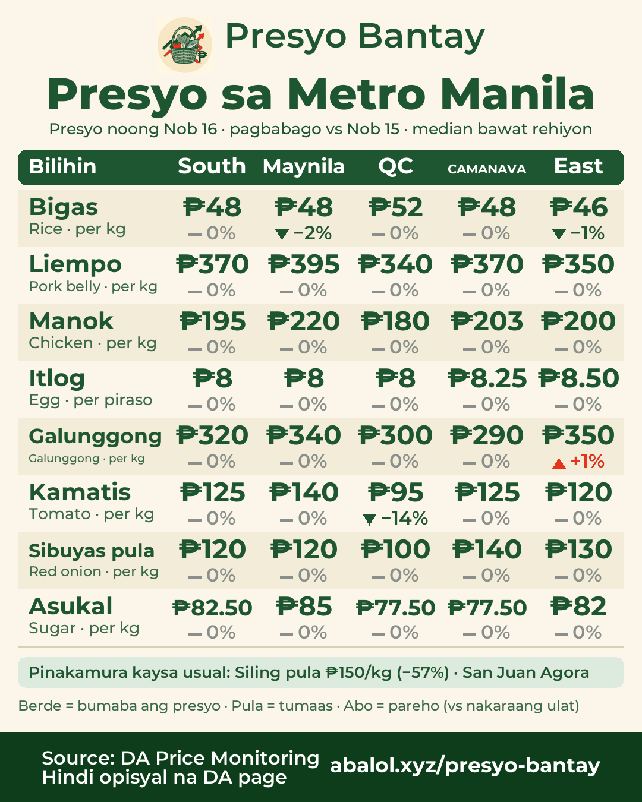
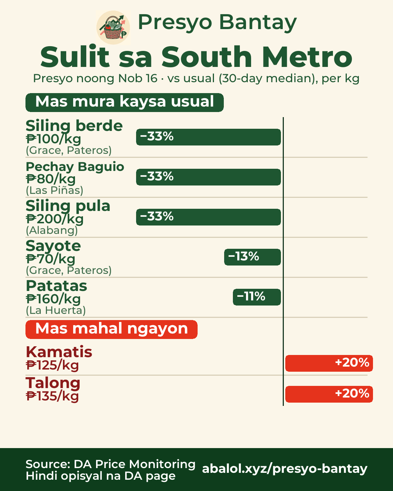
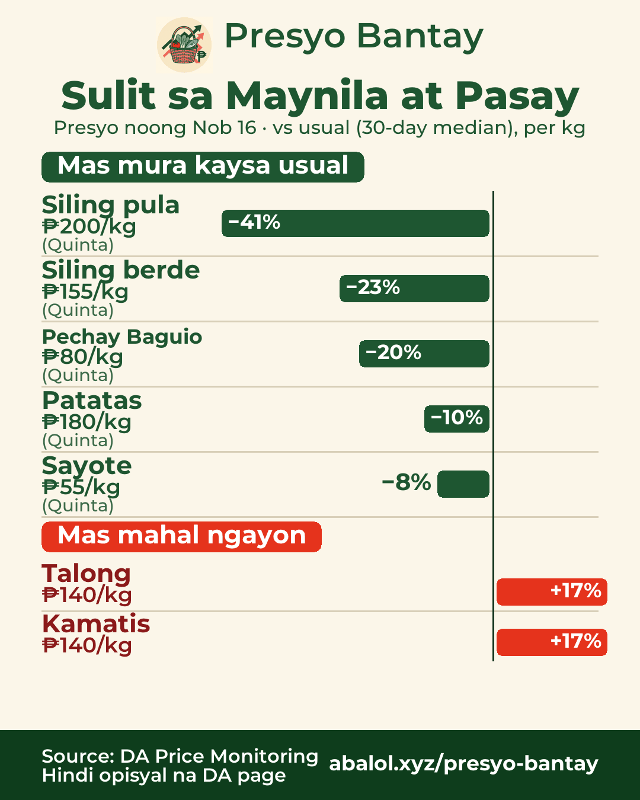
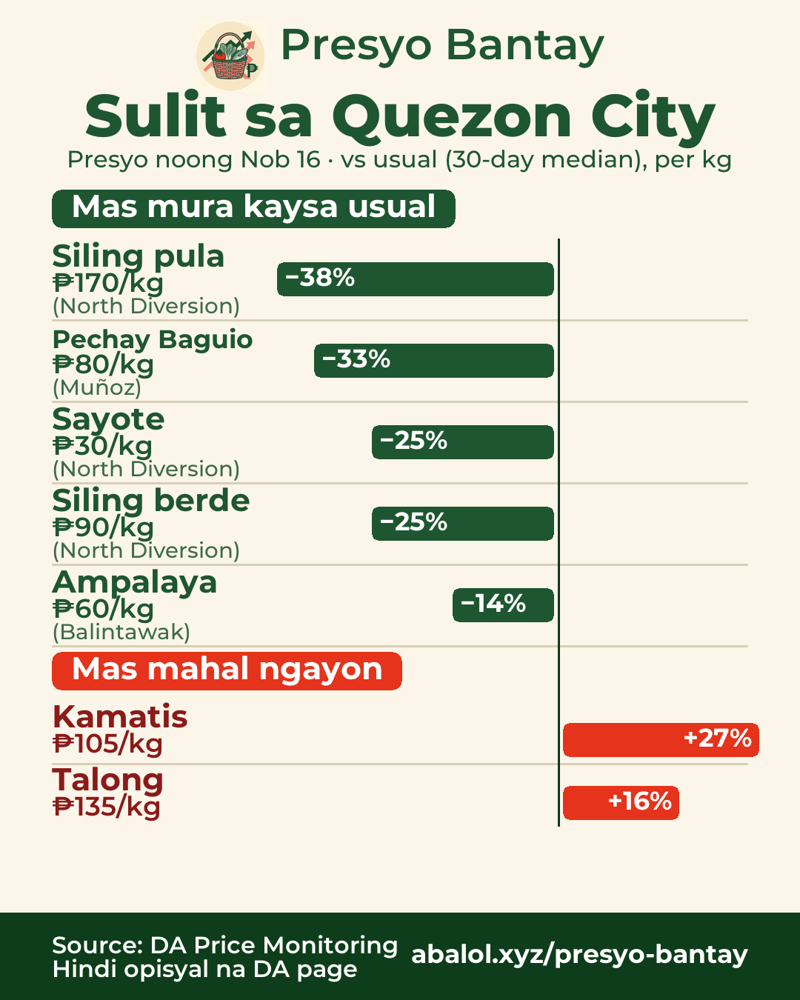
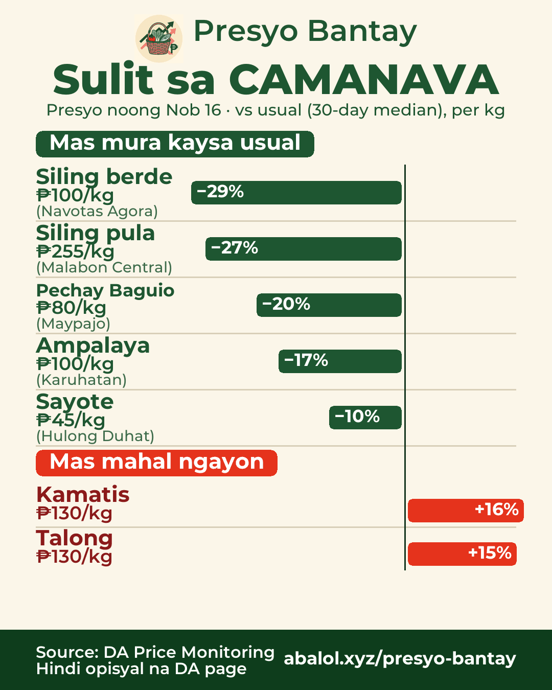
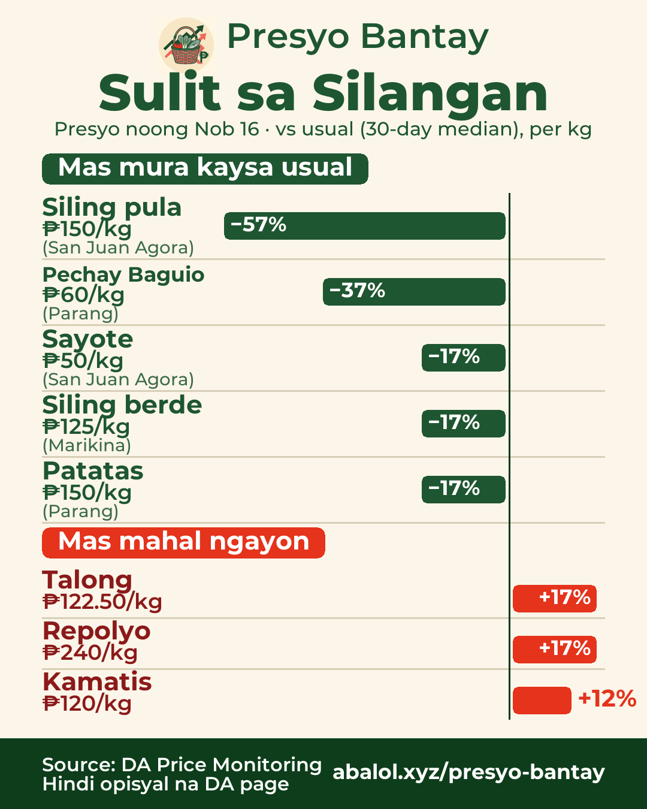

Nob 16, 2026Nov 16, 20262026年11月16日
Sulit sa palengkeMarket deals市場のお買い得
% = kumpara sa usual na presyo (30 araw)% = vs usual price (30-day)% = 30日間のいつもの価格比
Buod sa Metro ManilaMetro Manila summaryメトロマニラ概況

🛒 Presyo sa Metro Manila — noong Nob 16
Median ng mga palengke, kumpara sa Nob 15:
- Bigas ₱48/kg →±0%
- Liempo ₱370/kg →±0%
- Manok ₱200/kg ▼−1%
- Itlog ₱8.13/piraso →±0%
- Galunggong ₱320/kg →±0%
- Kamatis ₱120/kg →±0%
- Sibuyas pula ₱130/kg →±0%
- Asukal ₱81.50/kg →±0%
⭐ Pinakamura kaysa usual: Siling pula ₱150/kg (−57%) · San Juan Agora
🇬🇧 Metro Manila prices — Nov 16
Market median vs Nov 15:
Rice ₱48/kg →±0% · Pork belly ₱370/kg →±0% · Chicken ₱200/kg ▼−1% · Egg ₱8.13/pc →±0% · Galunggong ₱320/kg →±0% · Tomato ₱120/kg →±0% · Red onion ₱130/kg →±0% · Sugar ₱81.50/kg →±0%
⭐ Best deal vs usual: Red chili ₱150 (−57%)
🇯🇵 メトロマニラの価格 — 11/16
市場の中央値、11/15比：
米 ₱48/kg →±0%、豚バラ ₱370/kg →±0%、鶏肉 ₱200/kg ▼−1%、卵 ₱8.13/個 →±0%、ガルンゴン ₱320/kg →±0%、トマト ₱120/kg →±0%、赤玉ねぎ ₱130/kg →±0%、砂糖 ₱81.50/kg →±0%
⭐ いつもより安い：赤唐辛子 ₱150（−57%）
South MetroSouth Metro南部（ラス・ピニャス周辺）

🛒 Sulit sa South Metro — presyo noong Nob 16
✅ Mas mura kaysa usual:
- Siling berde ₱100/kg (−33%) · Grace, Pateros
- Pechay Baguio ₱80/kg (−33%) · Las Piñas
- Siling pula ₱200/kg (−33%) · Alabang
- Sayote ₱70/kg (−13%) · Grace, Pateros
- Patatas ₱160/kg (−11%) · La Huerta
⚠️ Mas mahal ngayon:
- Kamatis ₱125/kg (+20%)
- Talong ₱135/kg (+20%)
🇬🇧 Deals in South Metro — prices of Nov 16
✅ Green chili ₱100 (−33%), Pechay Baguio ₱80 (−33%), Red chili ₱200 (−33%), Chayote ₱70 (−13%), Potato ₱160 (−11%)
⚠️ Pricier: Tomato ₱125 (+20%), Eggplant ₱135 (+20%)
🇯🇵 南部（ラス・ピニャス周辺）のお買い得 — 11/16の価格
✅ 青唐辛子 ₱100（−33%）、ペチャイ・バギオ ₱80（−33%）、赤唐辛子 ₱200（−33%）、サヨテ ₱70（−13%）、じゃがいも ₱160（−11%）
⚠️ 高め：トマト ₱125（+20%）、ナス ₱135（+20%）
Maynila at PasayManila & Pasayマニラ・パサイ

🛒 Sulit sa Maynila at Pasay — presyo noong Nob 16
✅ Mas mura kaysa usual:
- Siling pula ₱200/kg (−41%) · Quinta
- Siling berde ₱155/kg (−23%) · Quinta
- Pechay Baguio ₱80/kg (−20%) · Quinta
- Patatas ₱180/kg (−10%) · Quinta
- Sayote ₱55/kg (−8%) · Quinta
⚠️ Mas mahal ngayon:
- Talong ₱140/kg (+17%)
- Kamatis ₱140/kg (+17%)
🇬🇧 Deals in Manila & Pasay — prices of Nov 16
✅ Red chili ₱200 (−41%), Green chili ₱155 (−23%), Pechay Baguio ₱80 (−20%), Potato ₱180 (−10%), Chayote ₱55 (−8%)
⚠️ Pricier: Eggplant ₱140 (+17%), Tomato ₱140 (+17%)
🇯🇵 マニラ・パサイのお買い得 — 11/16の価格
✅ 赤唐辛子 ₱200（−41%）、青唐辛子 ₱155（−23%）、ペチャイ・バギオ ₱80（−20%）、じゃがいも ₱180（−10%）、サヨテ ₱55（−8%）
⚠️ 高め：ナス ₱140（+17%）、トマト ₱140（+17%）
Quezon CityQuezon Cityケソン市

🛒 Sulit sa Quezon City — presyo noong Nob 16
✅ Mas mura kaysa usual:
- Siling pula ₱170/kg (−38%) · North Diversion
- Pechay Baguio ₱80/kg (−33%) · Muñoz
- Sayote ₱30/kg (−25%) · North Diversion
- Siling berde ₱90/kg (−25%) · North Diversion
- Ampalaya ₱60/kg (−14%) · Balintawak
⚠️ Mas mahal ngayon:
- Kamatis ₱105/kg (+27%)
- Talong ₱135/kg (+16%)
🇬🇧 Deals in Quezon City — prices of Nov 16
✅ Red chili ₱170 (−38%), Pechay Baguio ₱80 (−33%), Chayote ₱30 (−25%), Green chili ₱90 (−25%), Ampalaya ₱60 (−14%)
⚠️ Pricier: Tomato ₱105 (+27%), Eggplant ₱135 (+16%)
🇯🇵 ケソン市のお買い得 — 11/16の価格
✅ 赤唐辛子 ₱170（−38%）、ペチャイ・バギオ ₱80（−33%）、サヨテ ₱30（−25%）、青唐辛子 ₱90（−25%）、ゴーヤ ₱60（−14%）
⚠️ 高め：トマト ₱105（+27%）、ナス ₱135（+16%）
CAMANAVANorth (CAMANAVA)北部（カマナバ）

🛒 Sulit sa CAMANAVA — presyo noong Nob 16
✅ Mas mura kaysa usual:
- Siling berde ₱100/kg (−29%) · Navotas Agora
- Siling pula ₱255/kg (−27%) · Malabon Central
- Pechay Baguio ₱80/kg (−20%) · Maypajo
- Ampalaya ₱100/kg (−17%) · Karuhatan
- Sayote ₱45/kg (−10%) · Hulong Duhat
⚠️ Mas mahal ngayon:
- Kamatis ₱130/kg (+16%)
- Talong ₱130/kg (+15%)
🇬🇧 Deals in North (CAMANAVA) — prices of Nov 16
✅ Green chili ₱100 (−29%), Red chili ₱255 (−27%), Pechay Baguio ₱80 (−20%), Ampalaya ₱100 (−17%), Chayote ₱45 (−10%)
⚠️ Pricier: Tomato ₱130 (+16%), Eggplant ₱130 (+15%)
🇯🇵 北部（カマナバ）のお買い得 — 11/16の価格
✅ 青唐辛子 ₱100（−29%）、赤唐辛子 ₱255（−27%）、ペチャイ・バギオ ₱80（−20%）、ゴーヤ ₱100（−17%）、サヨテ ₱45（−10%）
⚠️ 高め：トマト ₱130（+16%）、ナス ₱130（+15%）
SilanganEast Metro東部

🛒 Sulit sa Silangan — presyo noong Nob 16
✅ Mas mura kaysa usual:
- Siling pula ₱150/kg (−57%) · San Juan Agora
- Pechay Baguio ₱60/kg (−37%) · Parang
- Sayote ₱50/kg (−17%) · San Juan Agora
- Siling berde ₱125/kg (−17%) · Marikina
- Patatas ₱150/kg (−17%) · Parang
⚠️ Mas mahal ngayon:
- Talong ₱122.50/kg (+17%)
- Repolyo ₱240/kg (+17%)
- Kamatis ₱120/kg (+12%)
🇬🇧 Deals in East Metro — prices of Nov 16
✅ Red chili ₱150 (−57%), Pechay Baguio ₱60 (−37%), Chayote ₱50 (−17%), Green chili ₱125 (−17%), Potato ₱150 (−17%)
⚠️ Pricier: Eggplant ₱122.50 (+17%), Cabbage ₱240 (+17%), Tomato ₱120 (+12%)
🇯🇵 東部のお買い得 — 11/16の価格
✅ 赤唐辛子 ₱150（−57%）、ペチャイ・バギオ ₱60（−37%）、サヨテ ₱50（−17%）、青唐辛子 ₱125（−17%）、じゃがいも ₱150（−17%）
⚠️ 高め：ナス ₱122.50（+17%）、キャベツ ₱240（+17%）、トマト ₱120（+12%）